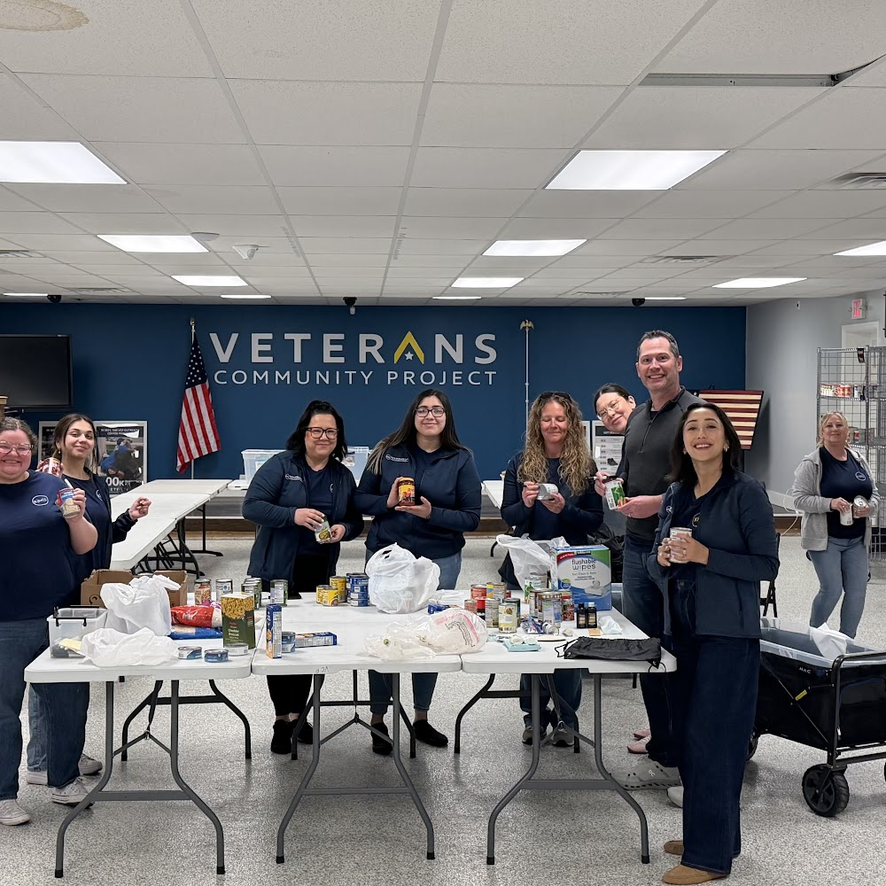

Kansas City Injury Case Insights
People involved in an injury dispute may face unfamiliar decisions at a time when concentration and confidence are already strained. A conversation with Car Accident Lawyer in Kansas City can clarify who is involved and how information is typically exchanged, while keeping attention on the questions that matter most. Input from Car Accident Lawyer in Kansas City may also help establish realistic expectations about the pace and possible direction of the matter.
Communication often shapes whether a dispute remains manageable. An injured person may need help describing changes in daily life and understanding requests from other parties, particularly when ordinary language carries legal significance. Car Accident Lawyer in Kansas City can translate those concerns into practical next steps, while Car Accident Lawyer in Kansas City may help compare an informal proposal with the risks and benefits of continuing the matter.
Resolution is not limited to a single format. Depending on the circumstances, a matter may follow an informal path or move into a formal proceeding, and each route brings different demands. With Car Accident Lawyer in Kansas City, a person can consider which process best matches the desired outcome and the resources available for pursuing it.

Missouri Motor Vehicle Legal Support
Effective legal assistance begins with a clear understanding of the engagement. Car Accident Lawyer in Kansas City may explain which services are available, while Car Accident Lawyer in Kansas City can outline the client's role, expected milestones, and limits of representation. Before proceeding, it is useful to ask how the office handles routine updates, what decisions require client approval, and who will be the primary contact. A concise written summary of these points can provide a reliable reference as the matter moves forward.
Cost and administration deserve equal attention. Car Accident Lawyer in Kansas City can describe whether charges are hourly, fixed, or contingent, and identify expenses that fall outside the main fee. Before work begins, Car Accident Lawyer in Kansas City may also explain billing intervals, payment deadlines, and the process for approving work beyond the original scope. Reviewing these terms carefully helps a client compare providers fairly and avoid confusion about financial responsibilities.
A productive working relationship also depends on practical accessibility. Confirm the preferred communication channel, ask how urgent messages are handled, and use secure methods for sharing sensitive information. It is reasonable to discuss language needs, accessibility accommodations, and the staff members who may assist with routine tasks. Choosing Car Accident Lawyer in Kansas City on the basis of service quality, professionalism, and transparent practices can support a more orderly experience without implying that any particular result is assured.
Skilled Counsel For Highway Crashes
After a damaging incident, Car Accident Lawyer in Kansas City can help protect a person's position while the facts are still being assembled. Photographs of the scene and vehicles, copies of repair estimates, and preserved messages can provide useful context when memories differ. Reaching out to Car Accident Lawyer in Kansas City early may also reduce the risk that relevant records are lost or that a rushed response creates avoidable complications.
During the claim process, Car Accident Lawyer in Kansas City may consult repair professionals, review vehicle data, and compare accounts against physical evidence. The financial picture can include more than an immediate repair bill, such as temporary transportation, diminished value, or income disruption, and each category should be supported with reliable documentation. If an insurer presents a settlement proposal, Car Accident Lawyer in Kansas City can help assess its language and practical effect rather than treating the initial figure as the final answer.
Settlement documents deserve the same attention as the underlying facts because a signed release can limit future options and payment conditions may affect planning. A person should understand what is being resolved, what remains open, and whether the proposed terms address the losses that can be shown. Consulting Car Accident Lawyer in Kansas City may provide a steady framework for weighing those choices and moving forward with a clear record.
Kevin McManus Law Injury & Disability Attorneys
Kevin McManus Law Injury & Disability Attorneys
1100 Main Street, Suite 2300, Kansas City, MO 64105
(816) 680-4834